Creative Direction
A collection of photoshoots that I've worked on, both individually and in collaboration, for BARE Magazine.
Wasteland
I oversaw the production of Issue 26 as a Creative Director, this was one of the four print shoots. Read the full issue here.
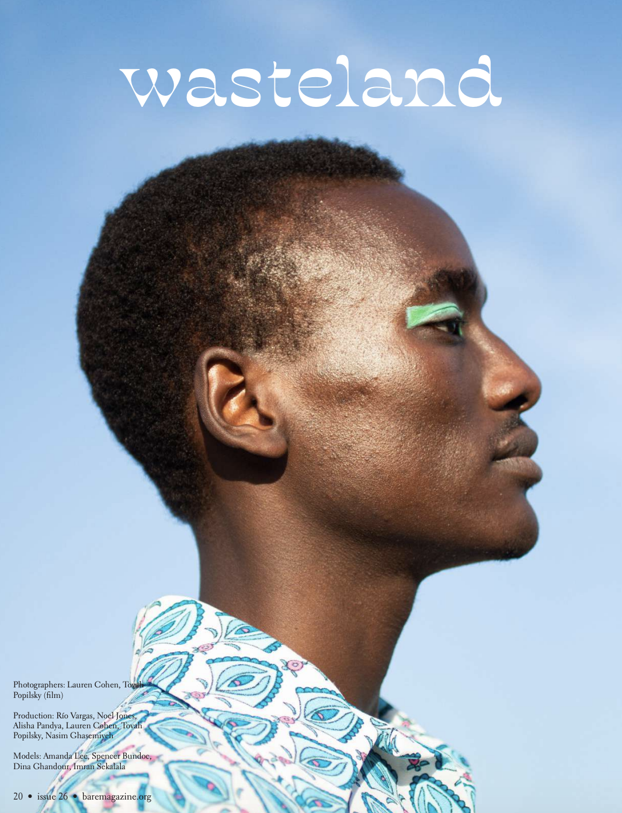
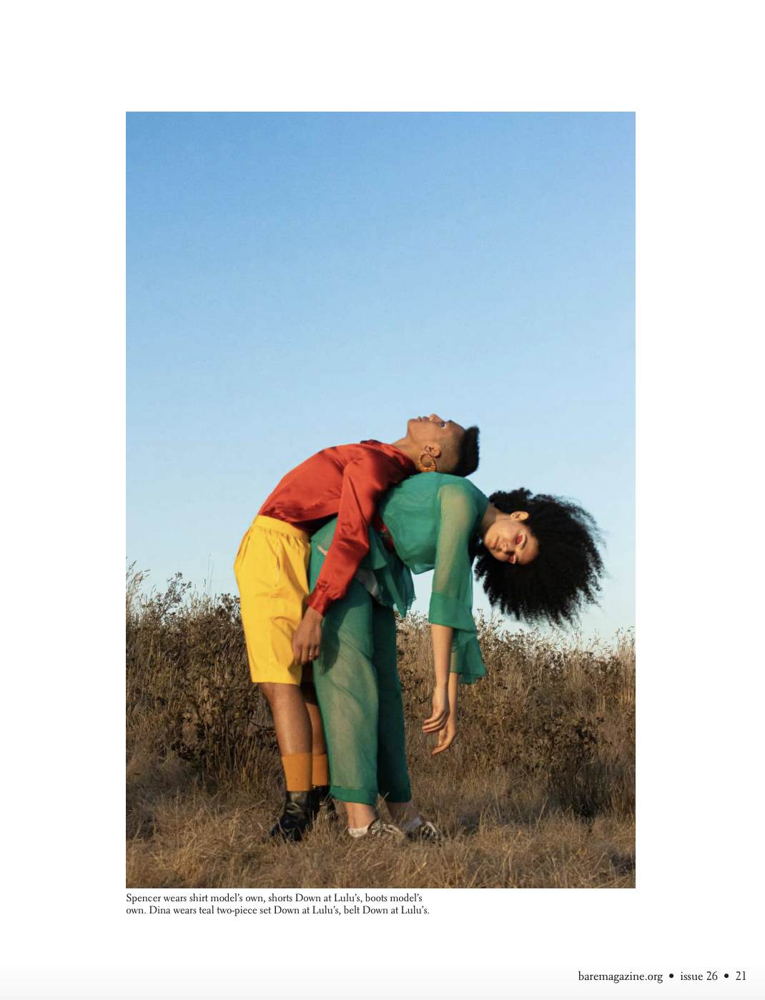
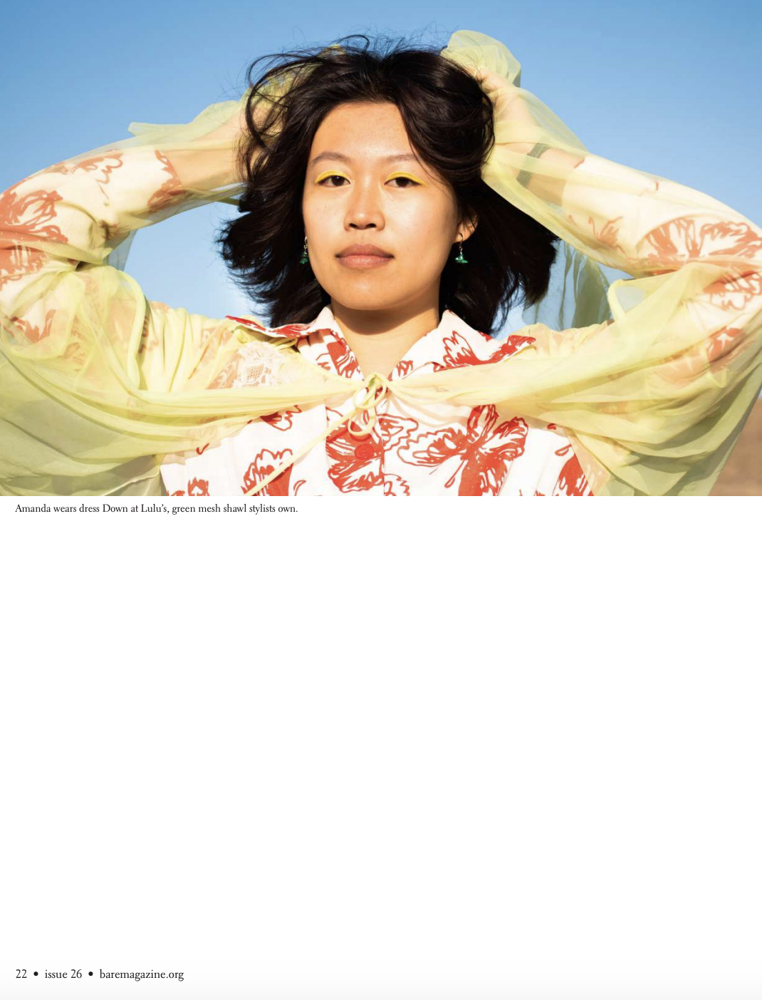
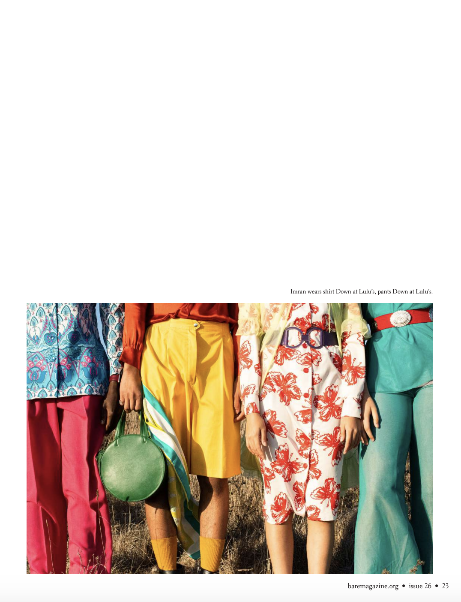
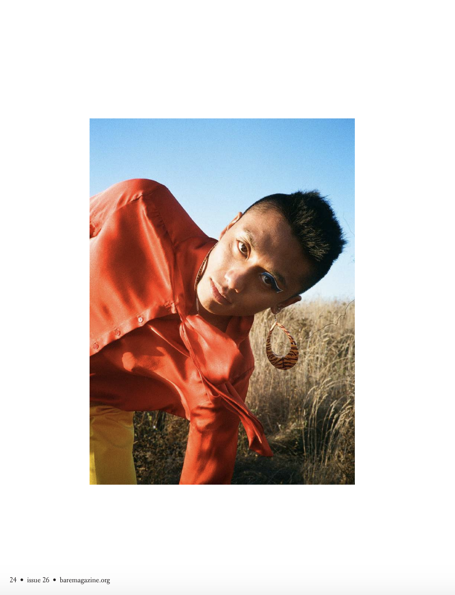

Redirect
I oversaw the production of this shoot in Issue 25 as a Creative Director in training. Read the full issue here.
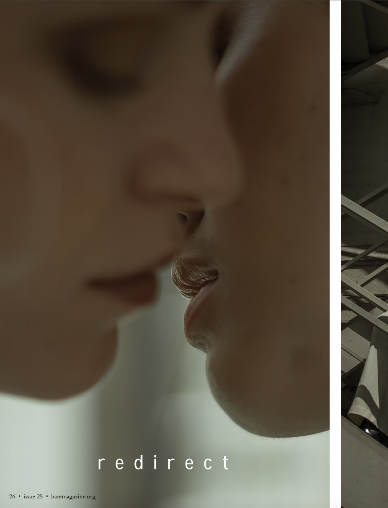
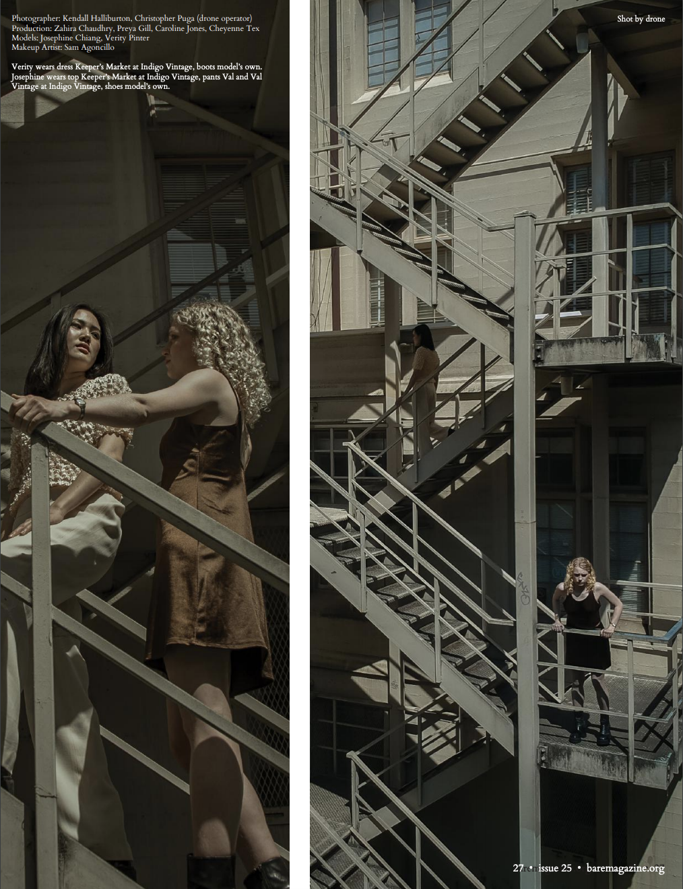
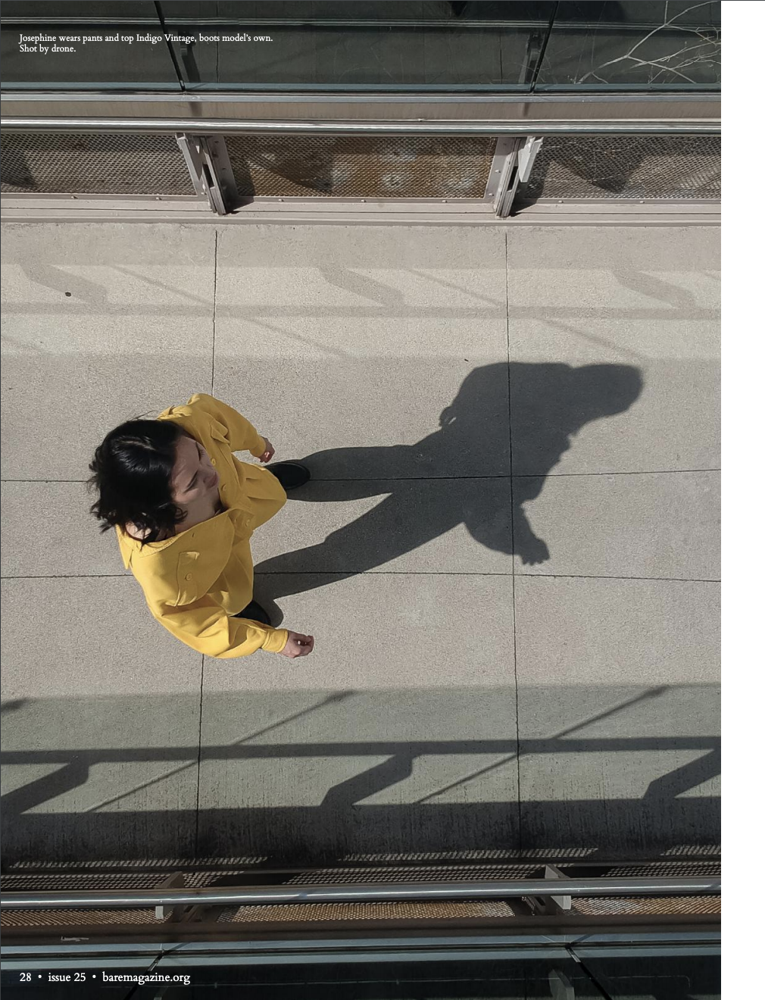
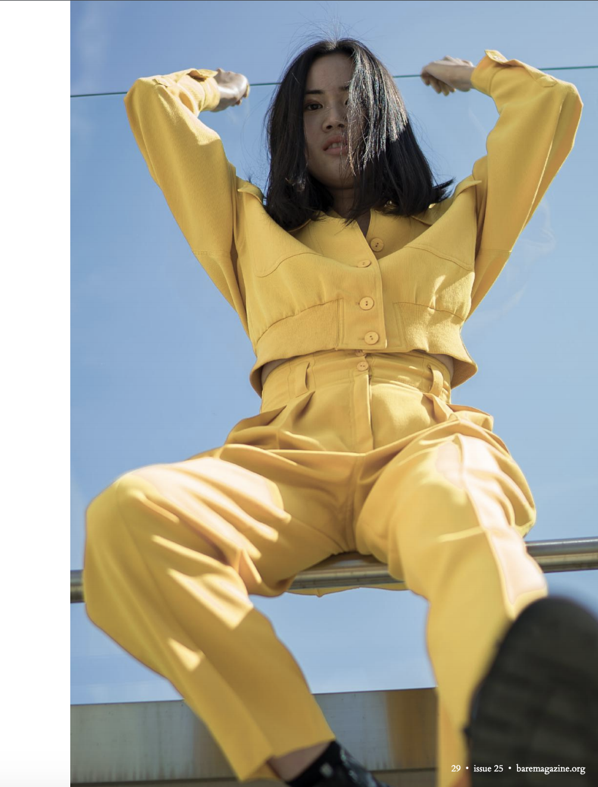
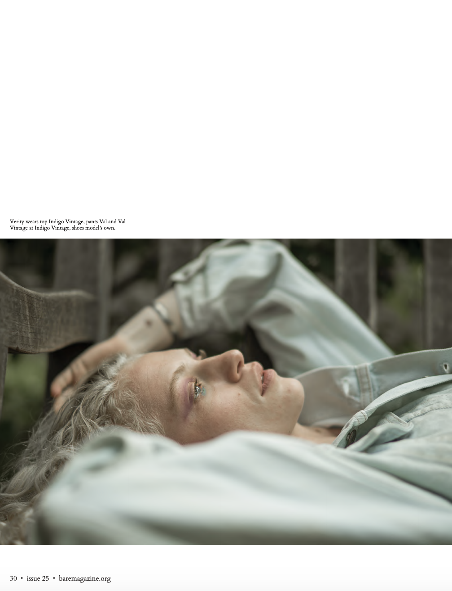
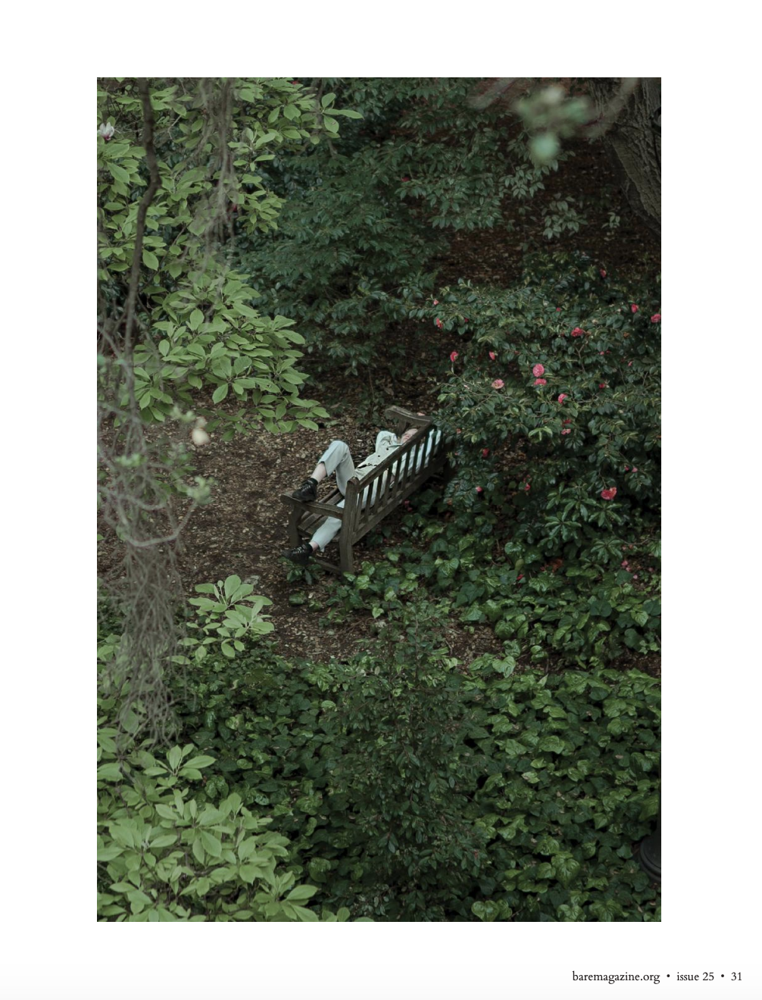
Mine
An exploration into feminine energy and self reflection. View more images here.


Saturn Song
Playing with angles, landscape, and props.
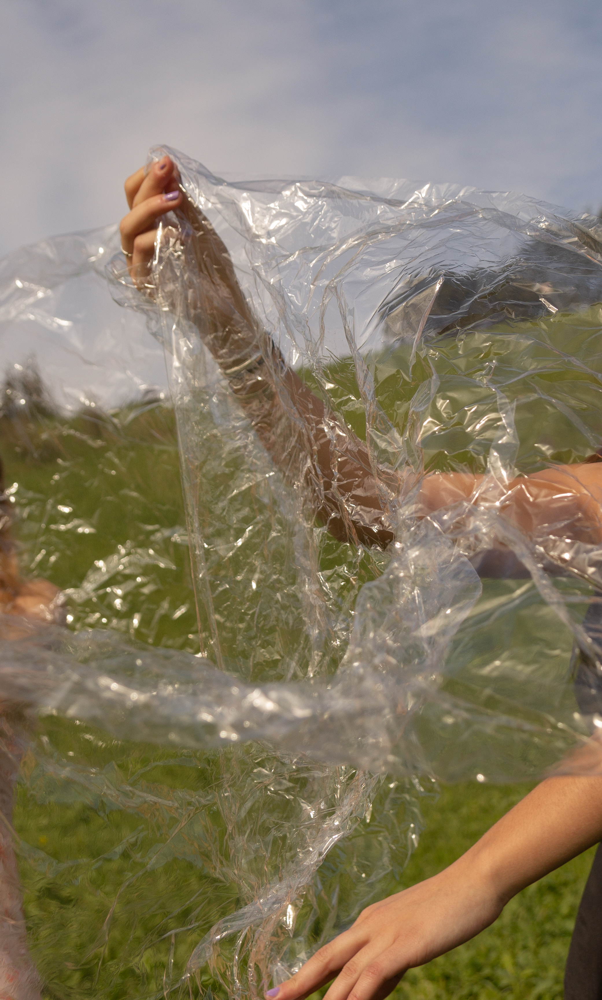


Sister
Embracing the beauty of Indian culture and the complexities that first-generation children experience with their identity.